Blisko: From Concept to Shelf

A proud product line of Everstream Enterprises — premium label & sticker essentials trusted by homes, restaurants, and small businesses across the United States & Canada.
$80,000+revenue generated first year
9000+units sold since launch
June 2025brand live on Amazon
USA & CanadaMarkets Served
Trademark secured
I secured trademark approval and sourced manufacturing partners before the brand went live.
Operations built
End-to-end e-commerce operations, owning branding, pricing and marketing strategy on top of Amazon FBA logistics.
Demand validated
Niche demand tested and supplier terms negotiated to support the next stage of the brand.
NEXT 12 MONTHS
Blisko is positioned for 100% growth over the coming year — a target, not a result.